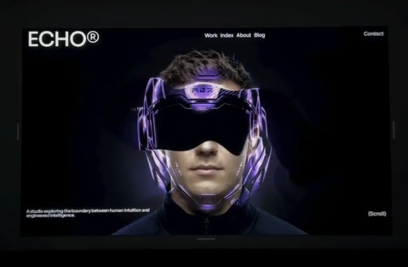
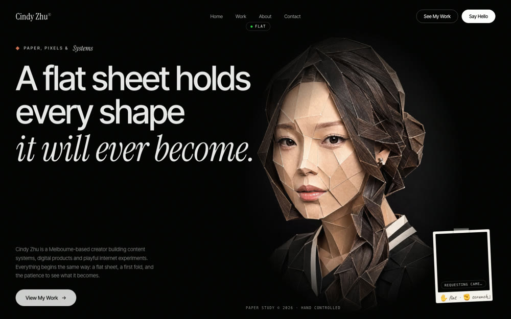
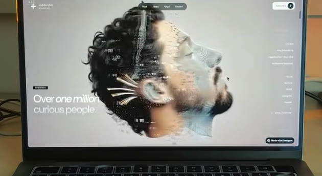

Four of these five run on one simple idea: your cursor or your scroll drives a video or a pair of images, so the page reacts to you in real time. The fifth (the layered one at the bottom) is pure code, no video, your hero splits into paper-like layers as you scroll.
keyint=1, which puts a keyframe on every frame so it jumps to any moment instantly. You never touch a terminal, Claude does it.
Someone drags their mouse across your face and a chrome version of you ripples into view underneath. It looks 3D, but it is just two flat images stacked, and your cursor paints a soft hole through the top one.
As you scroll down, a cartoon character's mouth opens wider and wider, and a black hole grows out of it until it swallows the whole page. Scroll back up and it closes. Your scroll bar is playing the animation frame by frame. It is the same scrub trick as the parallax one below, just with a fun character animation instead of a cinematic clip.
A simple flat 2D cartoon face centered on a plain cream background, front on,
minimal line-art style. Its mouth slowly opens wider and wider in one smooth
continuous motion, and as it opens a solid pure-black void grows out from inside the
mouth, spreading outward until it fills the entire frame in flat black. One
uninterrupted take, even constant speed the whole way, ending on a completely black
screen. No cuts, no camera shake, no flashing. Clean, minimal, playful.anim.mp4, open Claude Code in that folder, and paste this.Build me a single self-contained index.html: a scroll-linked animation hero. Create a
tall scroll section (about 300vh) with an inner sticky wrapper pinned to the viewport
(position: sticky; top: 0; height: 100svh) holding anim.mp4 (object-fit: cover,
muted, playsinline, preload="auto", with a poster). Keep the video PAUSED and drive
its timeline by scroll: map my scroll progress through the section from 0 to 1 onto
the video from first frame to last frame, so scrolling down opens the mouth and
scrolling up closes it. Do it in a requestAnimationFrame loop that eases currentTime
toward the target (a lerp) so it feels smooth, never set currentTime directly in the
scroll event, and guard the math until loadedmetadata so duration is not NaN. Layer
my name and a short intro over it with z-index, and fade the text out as the black
fills the screen. On touch or prefers-reduced-motion, autoplay-loop the clip or show
the poster instead. Also re-encode the video with ffmpeg using
-x264-params keyint=1:min-keyint=1 -pix_fmt yuv420p so every frame is a keyframe and
the scrub is instant, and extract the first frame as poster.jpg. Then run it and show
me a preview.
A papercraft portrait of you crumples into a paper ball as you close your fist, live on your webcam. Same trick as the rest, with your hand as the slider instead of your cursor or scroll.

A cinematic scene plays as you scroll down the page: a portrait dissolving into particles, a slow push-in, a product turning. It looks like a 3D scene rendering live, but it is one video whose timeline is tied to your scroll bar.
This is the one that feels like magic. As you scroll, your hero page splits into separate layers, like sheets of paper lifting apart. Your photo becomes its own layer, your headline another, the background another, your button another, and they drift at different speeds so the whole page gains real depth. No video for this one, it is pure code, and it works beautifully with your own cut-out photo and text.
Build me a single self-contained index.html: a layered parallax hero that feels like
sheets of paper. Stack these as separate layers, back to front: a full-bleed
background, a large headline, a cut-out photo of me (photo.png, transparent), a short
subline, and a call-to-action button. On scroll, translate each layer up the page at
a DIFFERENT speed using transform: translate3d (background slowest, then headline,
then photo, then subline, then button fastest) so they separate like lifting layers
of paper and the page gains depth. Add a subtle soft shadow under the photo layer so
it reads as floating above the others. Drive it from a requestAnimationFrame loop
reading scrollY (not a scroll listener that sets styles directly), use will-change:
transform on the moving layers for smoothness, and clamp the movement so nothing
drifts off screen. On prefers-reduced-motion, disable the parallax and show a clean
static stacked hero. Make it fully responsive, and layer everything with z-index so
the photo sits above the text where they overlap. Then run it and show me a preview.🎬 Higgsfield (every video and portrait) · 🤖 Claude Code (builds every page) · 🦄 Unicorn Studio (no-code effect for site one)
Build AI systems with me through recorded lessons you can follow at your own pace. Join the waitlist for first access and the founding price.